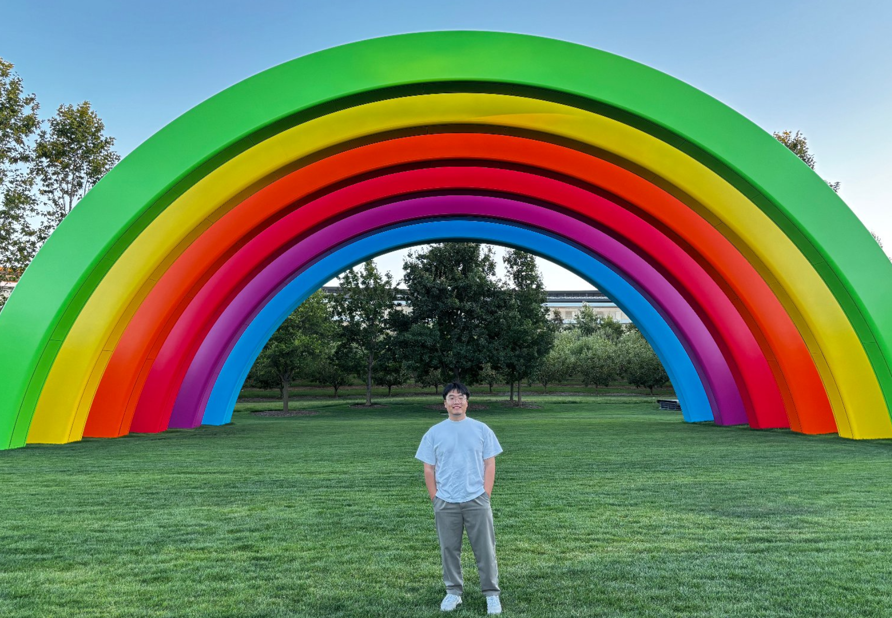
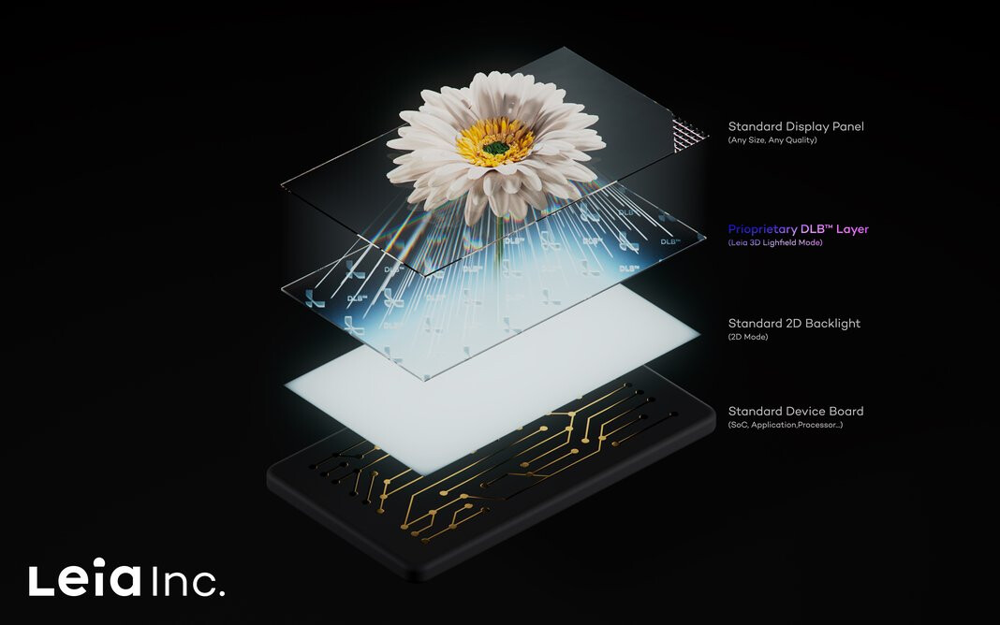
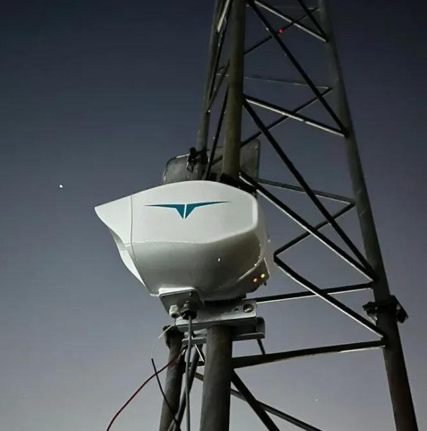
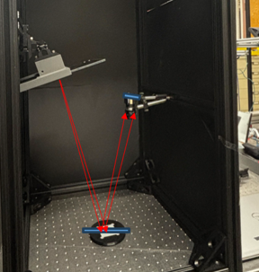
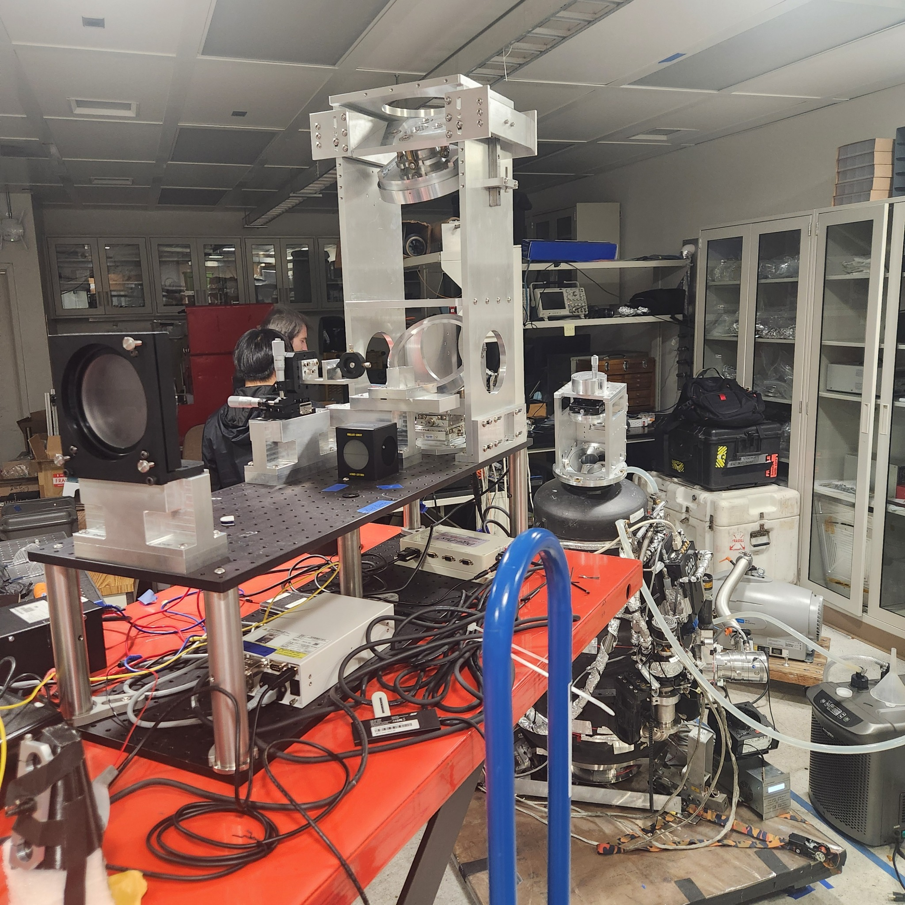

Optics
Imaging optical design, physical optics simulation, optical metrology, tolerance analysis, wavefront sensing, signal processing, system automation, and deflectometry.
Optical systems / metrology / simulation
A selected record of optical engineering work across industry, research labs, and collaborative instrument-development projects.
Skills
Imaging optical design, physical optics simulation, optical metrology, tolerance analysis, wavefront sensing, signal processing, system automation, and deflectometry.
Zemax, MATLAB, Python, and AI coding.
Working Experience

May 2025 - Aug. 2025 / Cupertino, CA
At Apple, I worked on a light-field microscope system for 4D measurement, contributing to tolerance analysis, alignment planning, calibration, and implementation. I also developed Python-based measurement automation and data-processing workflows for quantitative sample characterization and irradiance measurement.

Jun. 2022 - Jul. 2023 / Menlo Park, CA
At Leia Inc., I established optical metrology workflows for micro-imprinted glasses-free 3D display panels. I quantified moire, crosstalk, and image quality, then connected measured optical performance with manufacturing fidelity through close collaboration with design and fabrication teams.

Jun. 2021 - Aug. 2021 / Singapore
I worked at Transcelestial on wireless laser communication systems, redesigning the beacon-system camera in Zemax with a projected 332% optical-efficiency improvement. The work also included tolerance-aware design optimization, supplier communication, budget-conscious component sourcing, and ball-lens fiber coupling exploration for robust laser-fiber alignment.
Selected Projects

Aug. 2025 - Present / University of Arizona
I came up with a Bessel-beam wavefront-sensing architecture and developed a hybrid PINN and gradient-descent phase-retrieval framework. The work was validated against interferometer measurements, achieving 0.37 lambda average surface RMSE and a 60 lambda peak-to-valley recoverable dynamic range.
Jan. 2026 - Present / NASA
For coronagraphic imaging research, I developed a signal-processing pipeline to extract sub-nanometer temporal modulation from telescope primary-mirror data under ultra-low signal-to-noise conditions.

Jan. 2026 - Present / FreeFall Aerospace
I set up a deflectometry system for full-aperture surface characterization of a 1 m inflatable primary reflector under high vacuum, operating at approximately 10^-5 Torr. The work combined MATLAB and Zemax API workflows to improve surface reconstruction, evaluate repeatability, and quantify transient optical response.

Aug. 2024 - Apr. 2025 / Samsung
I worked with the team at Samsung to develop an ultra-precise deflectometry approach for Cordierite EUV mirror surface-profile metrology and thermal-expansion evaluation, reaching approximately 3 nm precision.

May 2024 - May 2025 / NASA
I led the optical design, tolerance analysis, and implementation of a simulator for FIREBall-2 spectrometer alignment verification. I coordinated with vendors for custom optics, managed lead times, brought up simulator hardware, and performed optical simulations with tolerances and aberrations to match experimental observations.

Aug. 2023 - Dec. 2024 / Optical Perspectives Group
I developed MATLAB and Zemax wave-propagation simulations of Bessel beams in misaligned systems for precision optical alignment. The work numerically validated Bessel-beam propagation as a quasi-paraxial ray model for practical optical systems.
Honors & Awards
2026
Recognized by the University of Arizona Wyant College of Optical Sciences for Ph.D. research that pushes perceived limits in optical technology.
2023
Awarded to a promising first-year Optical Sciences graduate student demonstrating academic excellence, creative thinking, and a broader commitment to service.
2021
An optical-sciences honor reflecting strong academic performance and promise in optical engineering.
2019
Recognized early achievement and momentum in undergraduate optical engineering study.
2018
Won first-place grand prize at the Global Capstone Design Fair for a freeform-optics LED headlight concept developed with a Rose-Hulman student team.